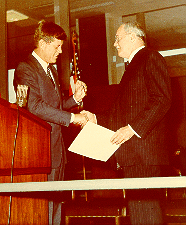
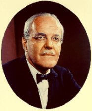

| Allen W. Dulles was instrumental in shaping U.S. intelligence operations. He began his career during World War II in the Office of Strategic Services, serving in Bern, Switzerland, and after the war, he chaired an intelligence review committee that was critical of the fledgling Central Intelligence Agency. Soon afterward Dulles was appointed Deputy Director of Plans at CIA and quickly rose to the number two position. After Dwight D. Eisenhower’s election in 1952, Dulles was appointed Director of CIA, serving until 1961. The photo on the right depicts President John F. Kennedy awarding Dulles the National Security Medal November 28, 1961 at the new CIA headquarters in Langley, Virginia. |  |
 |
The following speech excerpt was made before the National Association of Manufacturers 64th Congress of American Industry on December 4, 1959. Dulles was asked to give his analysis of the challenge the Sino-Soviet political and military structure posed. Listen as Dulles talks about the Soviet military threat and the direct action the U.S. and its allies should follow. A full text version of this speech can be found online or in Box 87 of the Allen W. Dulles Papers. However, it should be noted that, as was his wont, Dulles does not follow the printed version verbatim. To hear the excerpt, click on the left-most portion of the device beneath Dulles's portrait, left. |